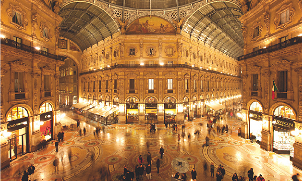
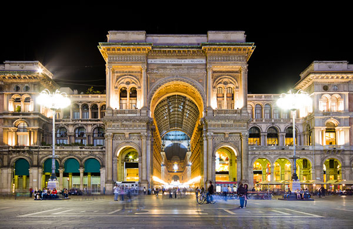
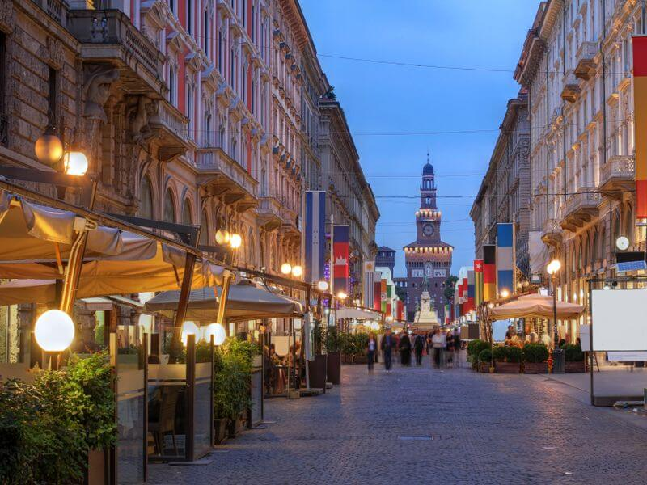
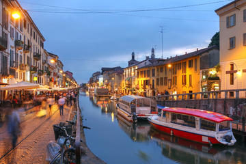
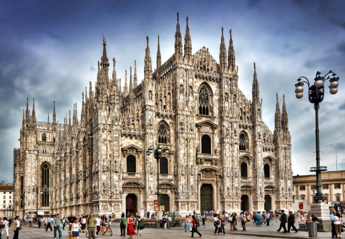
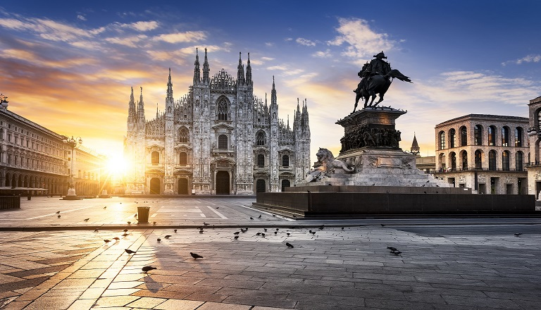
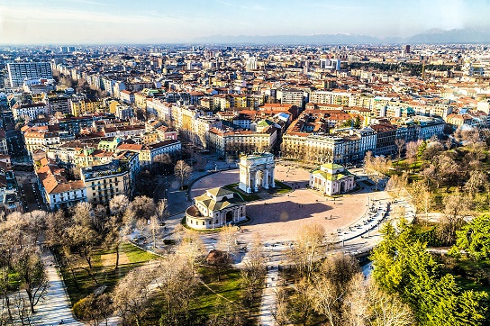
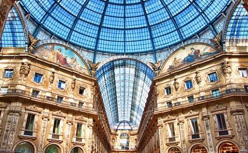

Mailand
Willkommen in Mailand
Stadt der Mode, der Finanzen, der Werbung, des Business, Hauptstadt der Lombardei und trotz ihrer nur 1,4 Mio. Ew. wohl die einzige italienische Stadt mit kosmopolitischem Großstadtcharakter.
Einst eine Gründung keltischer Siedler, erlebte die Stadt im Römischen Reich einen raschen Aufschwung. Mailand unterstand in seiner Geschichte dem Einfluss deutscher, französischer und österreichischer Kaiser und wuchs nach der Einigung Italiens zur größten Industriestadt des Landes. Sie ist heute die führende Kultur-, Medien- und Modemetropole Italiens, eine Universitätsstadt und ein internationaler Finanzplatz als Sitz der Italienischen Börse.
Sie beherbergt ein Weltkulturerbe, historisch bedeutsame Bauwerke und vielfältige Kunstschätze, die mehrere Millionen Touristen pro Jahr anziehen. Die Messestadt ist dank ihrer verkehrsgünstigen Lage in der oberitalienischen Po-Ebene ein Knotenpunkt des Schienen- und Autobahnnetzes und zweitgrößtes Luftfahrtdrehkreuz Italiens mit drei internationalen Flughäfen.
Sehenswertes vor Ort
-
Torre Branca
Über 100 m hoch ist dieser Turm am Eingang des Parco Sempione, der 1933 anlässlich der Triennale in nur zweieinhalb Monaten nach Plänen des Architekten Giò Ponti errichtet wurde. Sponsor war die bekannte Spirituosenfirma Branca. Von der Aussichtskabine hat man einen tollen Blick über die Stadt - bei garantiert gutem Wetter, denn andernfalls bleibt der Turm geschlossen. Eindrucksvoll sind auch die Aussichten auf das Lichtermeer bei den Abendöffnungen.
-
Galleria Vittorio Emanuele II
Il salotto, die gute Stube der Stadt mit Bars, Restaurants, Geschäften, ist ein weltlicher Tempel aus Stein, Stahl und Glas, mit dem sich das Mailänder Bürgertum ein Denkmal setzte und die nationale Einheit feierte. Die Kuppel (höchster Punkt 47 m) entspricht mit ihren Innenmaßen der Kuppel des römischen Petersdoms. Giuseppe Mengoni, Architekt der 1865-1877 erbauten Galerie, kam kurz vor ihrer Vollendung bei einem Sturz vom Baugerüst ums Leben. Ein Muss ist die Einkehr in die legendäre Bar Camparino in Galleria, 1915 von der Erfinderfamilie des damals schon berühmten roten Bitterlikörs Campari eröffnet und seit 2012 wieder in Firmenbesitz.
-
Castello Sforzesco
Die Burg der Herrscherfamilien Mailands (zuerst die Visconti, dann die Sforza) entstand, um Sicherheit vor den eigenen Untertanen zu geben - und nicht etwa, um die Stadt vor äußeren Feinden zu schützen. Ab 1368 wurde ein erstes Kastell an der Stadtmauer errichtet. Ludovico il Moro ließ es Ende des 15. Jhs. mit schlossähnlichen, repräsentativen Gebäuden u. a. von Bramante und Leonardo ausbauen. Die Anlage wurde Vorbild für den Bau des Kremls, der ab 1485 in Moskau von italienischen Künstlern errichtet wurde. Unter Spaniern und Österreichern diente das Castello weiterhin als Residenz und Zitadelle. Von hier aus ließ General Radetzky während der Märzaufstände 1848 die Stadt beschießen. Eine Restaurierung des späten 19. Jhs. verfälscht durch die Betonung des höfischen Charakters die Geschichte der Burg. Der Turm über dem Eingangstor ist eine Nachbildung des 1521 zerstörten Turms, den der Renaissancebaumeister Filarete entworfen hatte.
-
Duomo di Santa Maria Nascente
Der Mailänder Dom, dessen Grundstein 1386 gelegt wurde, ist durch viele Jahrhunderte gewachsen. Trotz langer Bauzeit bis ins 19. Jh. bleibt er ein großartiges Zeugnis lombardischer Gotik. Die Fassade wurde allerdings nach mehreren Baustufen stark historisierend vollendet. Mit einer Außenlänge von 158 m und einer Grundfläche von 11.400 m2 gehört der Mailänder Dom zu den größten Kirchen der Christenheit. Mehere Millionen Menschen besichtigen ihn jedes Jahr. Der Vierungsturm wird von einer vergoldeten Marienstatue aus Kupfer geschmückt, die im Volksmund zärtlich Madonnina ("Madönnchen") genannt wird, aber immerhin 4,16 m hoch ist und mehrere Tonnen wiegt. Das Dach zieren rund 3500 Figuren (Heiligenstatuen, Tiere, Dämonen). Das fünfschiffige Innere im mehrfach gebrochenen Dämmerlicht wird von riesigen Glasfenstern beherrscht: Auf 1700 m2 sind rund 3600 Personen abgebildet. Der Zugang zu Ausgrabungen der Antike und den Fundamenten der Vorgängerbauten liegt im Innenraum nahe dem Hauptportal.
-
Cenacolo Vinciano
Leonardo hat für das 1495-97 entstandende Bild genau den Augenblick des Abendmahls gewählt, in dem Jesus vorhersagt, dass ihn einer von den Jüngern verraten werde. Die Apostel, aufgelöst in Dreiergruppen, sind aufs Höchste bestürzt und erregt. Die großformatige, mit 4,2 m Höhe und 9,1 m Breite geradezu riesige Darstellung (bis dahin wurde das Thema eher auf kleineren Tafelbildern behandelt) schlug in die Kunstgeschichte ein wie die Breitwand in die Kinogeschichte. Das dramatische Spiel der Hände, die theatralische Anordnung wie auf einer Bühne und die (heute kaum noch nachzuvollziehende) Verschmelzung der Farben hatten das Bild sofort berühmt gemacht.
Noch bevor Leonardo die Arbeiten abschließen konnte, zirkulierten bereits Stiche mit Kopien. Der Künstler verwendete aus ästhetischen Gründen Temperafarben, die er auf den trockenen Verputz auftrug wie bei einem Tafelbild - und nicht mit der Freskotechnik in die noch feuchte Wand, bei der die Farben dann eintrocknen konnten und lange erhalten blieben. Bereits nach 20 Jahren war das Bild beschädigt. Überschwemmungen und schwere Zerstörungen haben immer wieder Restauratoren auf den Plan gerufen, die manchmal sogar Details wie Bärte oder Tücher hinzufügten. Bei der jüngsten gründlichen Restaurierung, die fast 20 Jahre gedauert hat, ist der möglichst originalgetreue Zustand des Bilds wieder hergestellt worden - und alle falschen Bärte wurden abgenommen.
-
Pinacoteca di Brera
Der Palazzo di Brera ist v.a. wegen der berühmten staatlichen Pinakothek interessant, die über 1300 Bilder (davon einige 100 in der Ausstellung) vom Mittelalter bis zur Moderne verfügt. Nicht versäumen sollte man im Saal VII die bewegende "Pietà" von Giovanni Bellini (1455-60) und den "Cristo morto", den Andrea Mantegna um 1478 in extremer perspektivischer Sicht gemalt hat, sowie in Saal XXIV die "Pala Montefeltro" von Piero della Francesca (1475) und das "Marienverlöbnis" (1504) von Raffael. Im Hof des Palazzos ist eine Bronzestatue (1809) von Antonio Canova aufgestellt, die Napoleon Bonaparte als siegreichen Apoll darstellt - nackt, wie Zeus ihn schuf.
-
Museo del Novecento
Im Palazzo dell'Arengario mit seinen eleganten Rundarkaden, Teil der monumentalen Modernisierung des Domplatzes in den Dreißigerjahren des 20. Jh., kann man eine eindrucksvolle Sammlung zur italienischen Kunst des 20. Jh. bewundern. Vieles kommt aus dem Privatbesitz Mailänder Familien: Das beginnt mit den Futuristen - die Antwort der Kunst auf die Stadt als moderne Lebensform, auf das dichte, schnelle, laute Mailand -, dann Werkgruppen großer Meister wie Giorgio De Chirico, Giorgio Morandi, Lucio Fontana, schließlich die Arte Povera der 70er Jahre. Wer sich für die Moderne Italiens interessiert, sollte sich dieses lohnende Museum nicht entgehen lassen.
-
Basilica di Sant'Ambrogio
Die dreischiffige Basilika des Stadtpatrons Ambrosius erhebt sich über seinem Grab. Sie ist das wichtigste mittelalterliche Baudenkmal der Stadt und eine Art Prototyp vieler Kirchenbauten der lombardischen Romanik. Eine erste Kapelle, San Vittore in Ciel d'Oro (Zugang rechts neben dem Altar), stammt aus dem Jahr 470, im Mosaikgewölbe sind Ambrosius und andere Heilige abgebildet. Gleich nebenan geht es zum Domschatz mit den "Weinenden", einer eindrucksvollen Skulpturengruppe aus dem 15. Jh. Die heutige Kirche geht weitgehend auf das 12./13. Jh. zurück. Ein langer Streit zwischen Mönchen und Domherren um Altarnutzung und Läuterecht führte dazu, dass jede Partei einen eigenen Glockenturm bekam: Jener der Domherren (Campanile dei Canonici) aus dem 12. Jh. steht links, jener der Mönche (Campanile dei Monaci) aus dem 9. Jh. rechts. Im eindrucksvollen romanischen Vorhof kann man Geschichte gleichsam atmen.
Entdecken Sie die Schönheit Mailands
       